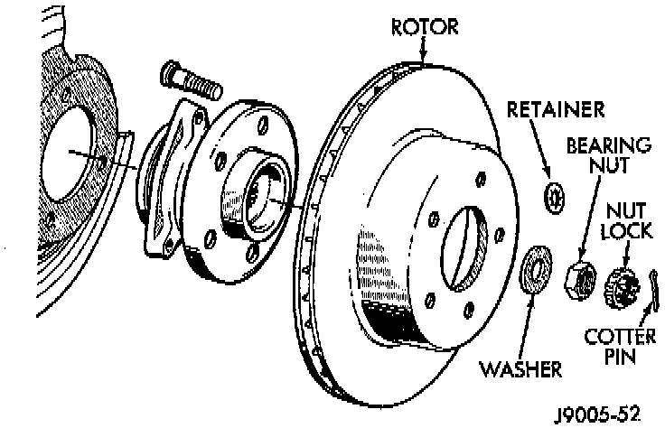

Front
REMOVAL1. Remove wheel and tire assemble.
2. Remove brake caliper.
Rotor And Hub:

3. Remove retainers securing rotor to hub studs.
4. Remove rotor from hub.
5. If rotor shield requires service, remove front hub and bearing assembly.
INSTALLATION
1. If new rotor is being installed, remove protective coating from rotor surfaces with carburetor cleaner.
2. Install rotor on hub.
3. Install brake caliper.
4. Install new spring nuts on wheel studs.
5. Install wheel and tire assembly.